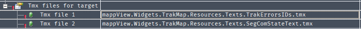
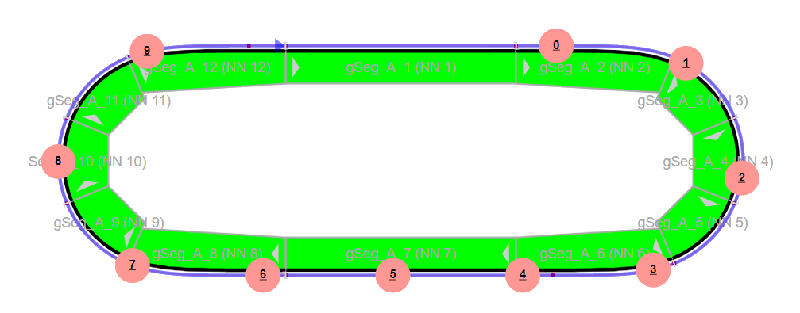

Usage
Prepare a working Acopos Trak Project
To start with the trak map, you should start from a project that has a working trak layout and has an SVG that was automatically generated using the SVGData file device in your project.
Requirements:
- Working Acopos Trak Project and layout (project compiles and can succesfully power on the assembly and move shuttles)
- Automatically generated SVG from the SVGData file device
- 5.13+ MpMotion Version
Import the TrakMap Technology Solution
Place the provided technology solution in the Automation Studio technology solutions folder (BrAutomationInstallationFolder)/(AutomationStudioVersion)/AS/TechnologySolutions. In your project, select the root node in the logical view, in the toolbox select to add a Technology Solution package and select the TrakMap application package that appears.
Running the TrakMapImporter program
We have created a simple tool to help assist in the parsing of the SVG and other steps needed to use the trak map.
Download and run the provided .exe
There is a prompt for 4 inputs:
- Initial SVG
- Export Folder
- Export File Name
- TrakDiag SegDefinition.st action file path

The initial SVG should be the file name for the exported SVG from Automation Runtime. The export folder is the location in which you'd like to generate the SVG for the paper widget itself. The Export file name is the name of the exported SVG you'd like to have. The final input is the file location of the SegDefine.st action under the provided TrakDiag task.
The program when Generate is pressed, will process the provided SVG and create a formatted SVG for the paper widget. Additionally it will populate the action with the segment names and assembly name. Upon completion of the export, you should validate that the values are correct from your project.
Upon succesful generation you will need to make sure your output svg is placed into your project's Visualization Resources folder to ensure that it is transfered to the target.
Before deploying, be sure to correctly set the Assembly and ShuttleMon values of the paperCore FUB in the intialization routine of the TrakDiag task. For example:
paperCore.Assembly := ADR(gSampleTrak);
paperCore.ShuttleMon := ADR(gShuttleMon);
Deploy to your Software Configuration
To your project add the trak paper library and the TrakDiag task. The TrakDiag task is the task that automatically implements the TrakPaper Core function block and supporting function blocks. The TrakDiag task must be added to the cyclic 8 task class (or a large idle time task class)
Additional Library dependancies
If not already in your project, make sure to add the following libraries and deploy them to your currrent configuration:
- standard
- AsIoDiag
- AsBrStr
Setting up the Paper widget
The final step that must be done is to connect to the paper widget and custom status widget.
You'll need to enable the following local variables in OPC-UA for the TrakDiag task (make sure to set the variables to be automatic enable).
- TrakDiag:clickedSegment
- TrakDiag:clickId
- TrakDiag:paperCore.SvgTransform
- TrakDiag:paperCore.SvgContent
Paper Widget
You'll need to add a paper widget to your HMI content page you wish to show the trak map on.
Once added to your content, to the paper widget, select the SvgFilePath to be the generated SVG from the previous step, map the paperCore variable SvgTransform and SvgContent variables from the TrakDiag task.
The Trak paper widget uses the color List property of the paper widget for the segment status colors during operation. The default color values could be the following:
#C9C9C9,#FF0000,#00FF00,#FFFF80
The important part is that the following indices are used for the styling of the segments
Style Description |
Index |
Segment Default Style |
0 |
Segment is in an error state |
1 |
Segment is okay style |
2 |
Segment is in a warning state style |
3 |
Custom styling is possible by changing the color at the defined index.
In order to use the segment details, the clickID property must be set for the Paper Widget. This can be done by using the below code block in an event binding and setting the contentRefId and widgetRefId correctly
<EventBinding id="content_trakmap.paperTrakMap.Click">
<Source xsi:type="widgets.brease.Paper.Event" contentRefId="trakmapContent" widgetRefId="paperTrakMap" event="Click" />
<EventHandler>
<Action>
<Target xsi:type="opcUa.NodeAction" refId="::TrakDiag:clickId">
<Method xsi:type="opcUa.NodeAction.SetValueString" value="= elementId" />
</Target>
</Action>
</EventHandler>
</EventBinding>
Custom Status Widget
To use the custom widget, after importing that technology solution you will need to "Build Widget Library" in Automation Studio, Project->"Build Widget Library".
Add the SegmentStatus widget into your content wherever you desire. Connect the TrakDiag:clickedSegment variable to the widget.
Additionally, you will need to connect the status snippets to the custom widget. Using the below code block in your content binding and set the contentRefId and widgetRefId correctly
<Binding mode="oneWay">
<Source xsi:type="opcUa" refId="::TrakDiag:clickedSegment.Status.ErrorCode" attribute="value"/>
<Target xsi:type="snippet" refId="SnippetSegError" attribute="value" />
</Binding>
<Binding mode="oneWay">
<Source xsi:type="snippet" refId="SnippetSegError" attribute="value" />
<Target xsi:type="brease" contentRefId="segmentDetailsContent" widgetRefId="SegmentStatus1" attribute="segErrorText" />
</Binding>
Finally - add the snippetset to your .vis file as shown below (the provided snippet files are in the custom library)
<SnippetsSets>
<SnippetsSet refId="TrakMapSnippets"/>
</SnippetsSets>
Theme Definitions
The custom widget utilizes some custom themes for the toggle buttons present. You can use your own themes should you like, or you can add the provided style file to your existing theme for styling.
Text Files
In the provided files there are the text files. These can be included to populate the error texts and segment statuses in the status widget. Add the provided text files located in the Widget Library Resources package to the text definition for the project.

Optional Features
Enabling Shuttles
To enable shuttles, a few actions will need to be taken to ensure proper functionality:
- Update the TrakDiag:paperCore.SvgTransform binding to use a fast sampling rate. This is done in the source of the binding:
<Binding mode="twoWay">
<Source xsi:type="opcUa" refId="::TrakDiag:paperCore.SvgTransform" attribute="value" samplingRate="fast"/>
<Target xsi:type="brease" contentRefId="trakmapContent" widgetRefId="paperTrakMap" attribute="transform" />
</Binding>
It is recommended to use the default fast sampling rate of 100ms found in the Config.mappviewcfg file.
- Enable Shuttles through the paperCore FUB by setting paperOptions.Shuttle.Enabled to TRUE
- Set your maximum shuttle count in the library to match the assembly configuration

After completing these steps, shuttles should show on the paper widget in a similar way to SceneViewer

Enabling Shuttle Color
To enable shuttle color, a few actions will need to be taken to ensure proper functionality:
- The included TrkPaperColorEnum in the TrkPaper library must be used in the Shuttle User Data.

- The colorList of the paper widget must be appended to for the correct colors to show. The paper core function block uses static index values to color. The first 4 values of the colorList will still be used for the segments. The default values for the shuttle color could be the following:
#808080,#0000CD,#FF0000,#228B22,#FFFF00,#FFA500,#FFFFFF,#000000,#ff9794,#800080
- Enable Shuttle Color through the paperCore FUB by setting paperOptions.Color.Enabled to TRUE
- Set the color offset for the paperCore FUB to grab the correct color value from the Shuttle User Data. Here is an example Shuttle Data struct:

As this example structure has the Color offset by the ID variable, we need to inform the paper core of this offset. And here is the offset needed to get the correct color value:
paperOptions.Color.Offset := SIZEOF(UDINT);
As a note, the typical behavior for ordering variables within a structure applies here. Even though the sample Shuttle User Data has a UINT before the Color variable, a UDINT offset (4 Bytes) is needed since the variables are word-aligned. An improper offset will cause the colors to not work!!!
After completing the above steps, shuttles should now have color enabled

Shuttle Preformance
It is important to note, the TrakPaper widget can not and will not be able to replace the speed and precision of shuttle movements that exist inside Scene Viewer. That being said, there are some things you can do to try and increase the preformance out of the system:
1. Tweak the transition time inside the paper core

Increasing this value above the default of 100 to 200 will help for large shuttle count systems. The trade off here is that the shuttle may not follow it's exact path at higher speeds and changing directins (diverts, curves etc)
2. Lower the maximum shuttle count. The library loops through the # of shuttles defined inside the constant of the library. Lowering this value if possible will decrease the load and therefore increase the animation quality of the system.